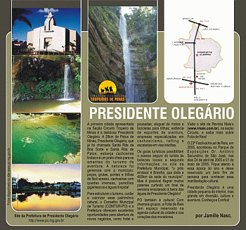

A primeira cidade apresentada na Seção Circuito Tropeiro de Minas é a deliciosa Presidente Olegário. A 28km de Patos de Minas, Presidente Olegário, que já foi chamada Santa Rita da Boa Sorte e Santa Rita de Patos, esbanja cachoeiras lindas e é um prato cheio para os amantes do turismo de aventura. A natureza foi generosa com o município: poços, grutas, pontes e trilhas de fácil acesso. cachoeiras com quedas imensas, paredões gigantescos e águas límpida!
Para estruturar o turismo, cuidar e valorizar esse patrimõnio natural, o Conselho Municipal de Turismo (COMTUR-PO) e a Prefeitura oferecem excelentes oportunidades para abertura de novos negócios, como hotel e pousada de 3 a 5 estrelas; aluguel de motos e bicicletas para trilhas; estância de esportes de aventura; ainda há espaço para empresas especializadas em cachoeirismo, rafting e escaladas em vias inéditas.
Os guias turísticos possibilitam o acesso seguro do turista às belezas locais e segundo informações no site da Prefeitura Municipal, "o pólo emissor é Brasília, que dista a 400km da sede do muncípio". Mas é possível flagrar muitos patense curtindo um final de semana ensolarado à beira das águas de Presidente Olegário! Nada melhor que colocar um tênis, caminhar pelas trilhas deixadas pelos desbravadores da região do Alto Paranaíba e comemorar num gostoso banho de cachoeira para renovar a alma!
Presidente Olegário também é cultura! Com diversos grupos, a Folia de Reis tem espaço reservado na agenda cultura da cidade e nos corações dos moradores.
Abaixo, ainda nessa seção, e saiba mais sobre Folia de Reis!
O 23º Festival Anual de Reis, em 2005, aconteceu no Parque de Exposições Dr. Antônio Secundino de São José, nos dias 24 de abril de 2005 e 01 de maio de 2005. Fique atento à essa época do ano e deixe reservado um belo fim de semana para conhecer essa manifestação cultural.
Folia de Reis em Presidente Olegário
"São grupos cênicos e musicais que dramatizam através de cantos a viagem bíblica dos três Santos Reis Magos - Baltazar, Belchior e Gaspar a Belém vindos respectivamente da Arábia Saudita, Etiópia e Armênia.
No centro sul do país a festa dos Três Reis Magos é conhecida por Festa dos Santos Reis, cuja força investida na bandeira tem o poder de curar ou melhorar a vida das pessoas.
Geralmente o folguedo (foliões) vai às ruas no período de 25 de dezembro (data do nascimento de Jesus Cristo) ao dia 06 de janeiro (epfania ou festa de Santos Reis).
Após percorrerem todas as casas próximas ao festeiro e em outras da região vão arrecadar donativos que depois juntamente com o dinheiro arrecadado é entregue no Festival Anual de folias de reis ao Dispensário São Vicente de Paula que os doará as pessoas mais necessitadas do município.
Quando o cortejo chega a uma casa a bandeira representando os Santos Reis é passada pelo corpo dos moradores e pela cabeça dos doentes.
Nesse momento eles fazem promessas dos Santos Reis e uma foto da pessoa que pede a graça é presa à bandeira.
Em seguida para quebrar o clima de gravidade surgem personagens vestidos de máscaras vistosas, bizarras que são os palhaços que perseguem as crianças, as quais fogem entre gritos e risadas, caçoando até mesmo dos donos da casa.
 Ao final, Santo Reis pede licença e segue viagem mantendo a tradição de canto com várias melodias que se desenvolvem simultaneamente.
Ao final, Santo Reis pede licença e segue viagem mantendo a tradição de canto com várias melodias que se desenvolvem simultaneamente.
As folias de Reis são compostas de um capitão, um alferes (carrega a bandeira), 1ª a 5ª voz, pandeiro, um caixeiro, um sanfoneiro, cuíca, viola, vilão, rabeca e triângulo.
O festival anual de folias de reis de Presidente Olegário acontece no Parque de Exposições Dr. Antônio Secundino de São José no último domingo de abril e no primeiro de maio, em Presidente Olegário.
Participe deste evento cultural!"
Texto retirado do site oficial da Prefeitura Municipal de Presidente Olegário. (http://www.po.mg.gov.br)